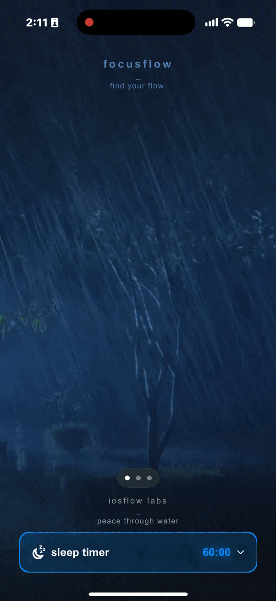

Ambient rain and focus sessions for iOS
FocusFlow, displayed as ASMRainStorm on iOS, pairs ambient rain recordings with tools for focused work and relaxation.
App demo

- Choose from four rain sounds, from soft rain to thunderstorms.
- Run Pomodoro focus sessions with timed breaks or set a sleep timer.
- Follow the countdown from the Lock Screen or Dynamic Island with Live Activities.
Run in Xcode
In the source checkout, open projects/focusFlow/focusFlow.xcodeproj, select the focusFlow scheme, and run on an iPhone simulator with iOS 17 or later.